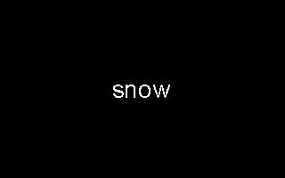

| [ < ] | [ > ] | [ << ] | [ Up ] | [ >> ] | [Top] | [Contents] | [Index] | [ ? ] |
TXTEXT Subfunction 3: Mask - random white dots
Syntax:
TXTEXT 3 fillratio
TXTEXT experiment 3 takes one argument, a fillratio between
0 and 1.0. It first recalls the saved bounds for the last text written
(see section TXTEXT Subfunction 1).
Each pixel within these bounds is then changed to white with a
probability of fillratio. Note that pixels not turned white are
left as is (they are not turned black). This creates the effect of
"snow" on the existing image.
In the following testlist, the word `snow' is written into a picture, and then 50 different pictures are drawn, each with approximately 30% of the pixels in the text bounds changed to white:
%X[txtext.xr] %M2%C2 %I[1,1,160,100,snow] %I[50,3,.3] %K[2,51,3] |
Here is the base picture (#1) and three examples of the generated pics (#2-50):
 |
|
| |